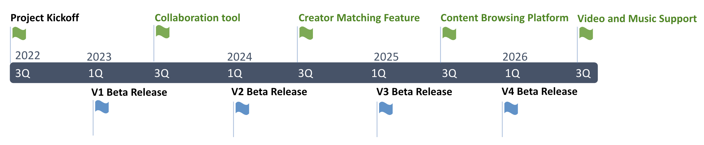

Royalty based collaboration platform
for creators
Created by Maya Kanehara and Yuichi Oneda
Team
MayaK
Yuichi Oneda
Antonio Kamiya
Our Mission
Byodo is committed to empowering creators and publishers. by providing the tools to automatically distribute royalties based on contribution. We invest and focus on technologies and services to maximize creator value and revenue
Problems
Social media and blogs have been created by individuals, but they are now evolving to a more professional quality, with blogs becoming articles, video postings becoming movies, and photo postings becoming sophisticated advertisements
Accordingly, the creation of content has become a team effort with a division of work, and a fair sharing of compensation for these creators is necessary
However, there is no product that meets those demands
Market Size
This means that online content will require the same quality of content as publications in the future.
The growth rate of publications is declining, But The number of blogs has increased each year, The number of podcasts has increased each year, The number of picture contents has increased each year, The number of video contents has increased each year.
Teamwork
andA fair royalty system
are necessaryCreator's Problems
Creators do not get paid as much as they should be due to cost of managing royalties.
Big companies retain majority of revenue and ownerships of contents.
No collaborative tools is to manage the entire process of fundraising, recruiting teams, and distributing royalties exist
Sharing ownerships of content is very difficult.
Solution
We provide the tools to solve them all
For creators
They can manage everything from content planning, team organization, content creation, sales and distribution, and royalty management in one place.
They can also find sponsors for their plans.
Receiving royalties and renewing contracts are all managed on the blockchain using Token to make it fair and easy.
Plus,
They can use the tool for free.
They pay a fee only if a transaction occurs for the content they create.
To maximize effectiveness depending on the situation, several payment options will be offered.
For publishers
This tool will make it easier to pay creators and manage royalties, which used to be complicated.
They can even find a team that will create the content they want and track the progress of the content they have requested.
They can use this royalty system for both print and digital.
Product Feature Comparison

Business Model
Byodo makes revenue when creators gain royalties
- Revenue Model for Creators and Investors of contents
- Sales of content
- Distribution of content
- Secondary sales of content
- Sales of ownership share
- Revenue Model for Byodo
- Subscription
- 2% of Creator's revenue
Product RoadMap
Our first priority is to release collaboration tools. Then we will implement a matching feature for creators to create content, followed by a content browsing platform.
Go-to-market Strategy
- Connect with influencers/online magazine publishers to introduce Byodo by providing incentives to write
- Attend physical writer's events to connect with writers communities by sponsor and actively participate in
- Let Byodo's investors and their communities use the platform
Growth Forecast
Financial Forecast
Why Byodo?
- Patent pending method of using blockchains effectively to manage royalty payment contracts
- Relationship with existing publishers who will benefit greatly from our product by reducing cost of royalty management
- Ability to scale to asian markets rapidly
- Byodo is the first mover to build creators ecosystem distributing royalties and being able to collaborate